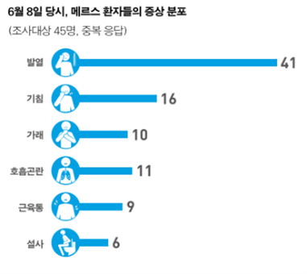

🏠
About MERS
- 정의: 중동에서 발생된 급성 호흡기 감염병
-
증상: 대부분 환자가 중증급성하기도질환(폐렴)이지만 일부 가벼운
급성상기도질환을 나타내거나 무증상인 경우도 있음.
주요증상은 발열, 기침, 호흡곤란, 그 외의 두통, 오한, 인후통, 콧물,
근육통, 식욕부진, 오심, 구토, 복통, 설사 등
-
잠복기: 평균 6.83일(2~14일 이내) 증상 발생(증상 발현 전, 감염전파
없음)
-
전파: 일반적으로 2m 이내에서 기침, 재채기를 할 경우 나오는 분비물로
전파
- 치사율: 20% ~ 46%
